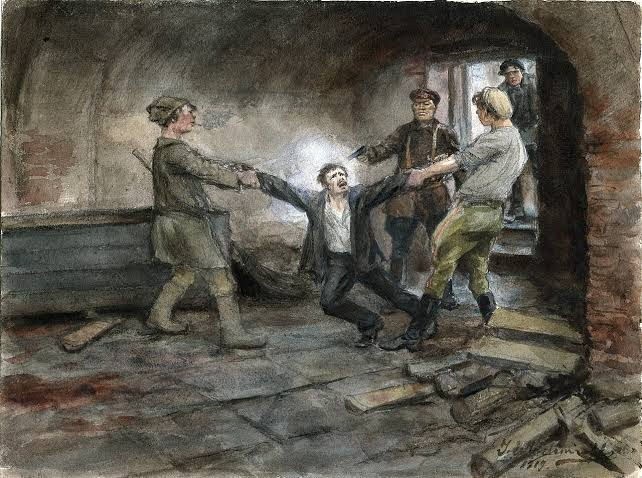

이곳은 소련의 한 공장.
5분 늦게 출근한 노동자는 직무태만으로 체포됐다.
5분 일찍 출근한 노동자는 너무 일찍 온 게 수상하다고 체포됐다.
정시에 출근한 노동자는 미국산 시계를 가진 게 분명하다고 체포됐다.

이곳은 소련의 한 공장.
5분 늦게 출근한 노동자는 직무태만으로 체포됐다.
5분 일찍 출근한 노동자는 너무 일찍 온 게 수상하다고 체포됐다.
정시에 출근한 노동자는 미국산 시계를 가진 게 분명하다고 체포됐다.
체르노빌 원전 사고를 수습하기 위해 로봇이 투입되었다.
미국제 로봇은 7분 정도 작동하다가 원자로에서 방출되는 강한 방사능에 의해 회로가 타서 멈추었다. 일본제 로봇은 9분 동안 작동하다가 멈추었다.
그런데 소련제 로봇은 1시간째 작동하는 것이 아닌가?
사고 현장에 취재 온 기자들이 소련제 로봇의 성능에 감탄하고 있을 때 확성기가 울려퍼졌다.
"이바노프 동무! 이제 쉬는 시간이니 담배 한 대 피우고 오시오."
이게 더 웃기네ㅋㅋㅋㅋㅋㅋㅋㅋ
실화 바탕이라 뼈가있는 농담이지
실제로는 2분이 넘어가면 생명이 위험한 수준이고 심할때는 40초만에 작업 끝내고 돌아와야 했다지.
ㅋㅋㅋㅋㅋㅋ십ㅋㅋ
두 러시아 여자가 감자 배급을 받기위해 배급소를 찾았다
줄을 선지 사흘이 지났는데도 줄은 전혀 줄지 않았고, 한 여자가 참지 못하고 화를 내기 시작했다
"더 이상 못 참겠어! 모스크바로 가서 고르바초프를 죽여버릴 거야"
1주일 후, 여자는 돌아와서 다시 줄에 섰다. 다른 여자가 그녀에게 물었다
"어떻게 됐어?"
"여기 줄은 아무것도 아니야"
ㅋㅋㅋㅋ 이거도 개웃기네 ㅋㅋㅋ
뭔가 그 꺼끌한 회색 펄프지 갬성 ㅈ된다
진정한 펄프픽션
ㅋㅋㅋㅋ
ㅋㅋㅋㅋㅋㅋㅋㅋㅋㅋㅋㅋㅋㅋㅋ
이해안됨
배급 줄보다 목 따려고 대기하는 줄이 더 길다는거
20분 늦게 출근한 노동자는 아무도 없어서 일을 시작했다
아니지 아무도 없는데 일을 왜함 ㅋㅋ
1934년 초, 한 이탈리아 공산당원이 소련에 연수를 가서 직접 노동하면서 공산주의 이론을 공부하게 되었다. 그는 고향의 친구들에게 소련에서의 생활을 정확하게 전해 주고 싶었다. 그러나 편지가 검열을 받을 건 뻔한 일이니까, 고민 끝에 다음과 같은 방법을 사용하기로 했다. (소련에서의) 현실이 기존에 알려진 것보다 더 나은 부분에 대해서는 파란 잉크로, 현실이 기존의 인식과 차이가 없는 부분에 대해서는 검은 잉크로, 현실이 기존의 인식보다 열악한 부분에 대해서는 빨간 잉크로 글을 쓰기로.
얼마 후 소련으로부터 이탈리아로 편지가 왔는데, 전부 흑색 잉크로 씌어 있었다. 고향 친구들은 결론을 내렸다. 소련이라는 곳은 당에서 선전하는 것처럼 좋지도 않고, 그렇다고 비판자들이 선전하는 것처럼 그렇게 나쁘지도 않은 모양이라고. 그런데 편지의 맨 끝에는 이런 추신이 달려 있었다.
"미안하지만 이곳에서는 빨간 잉크를 살 수가 없었다네…"
아 이건 마지막 문장이 파래야 하는데
아이 재밌어
공업화 계획과 동시에, 소련에서는 급속히 집단농장 계획이 추진되었다. 당 간부가 이바노비치의 집에 찾아와 집단농장에 가입하라고 설득했다. 이바노비치는 결국 가입에 동의하지 않을 수 없었다. 당 간부는 이것을 다짐하기 위해 물었다.
"이바노비치 동무, 소를 집단농장에 바칠 각오가 되어 있는가?"
"그럼요."
"말도?"
"물론입죠."
"그리고 염소는?"
"아니, 염소만은 안 됩니다."
"무슨 소린가? 소와 말까지 바친다면서 염소는 왜 안 된다는 건가?"
"저한테는 염소밖에 없으니까요."
흐루쇼프가 돼지 농장을 방문하였고 그곳에서 사진을 찍었다. 한 신문사 사무실에서는 사진 아래에 어떤 캡션을 넣을지 논의 중이었다.
"돼지들 사이에 있는 흐루쇼프 동지", "흐루쇼프 동지와 돼지들", "흐루쇼프 동지 주변의 돼지들" - 모두 거부되었다. 마침내 편집자가 결정을 내렸다. 다음날 신문에는 사진 아래에 "왼쪽에서 세 번째가 흐루쇼프 동지."라고 적혀져 있었다.
이것도 웃기네 ㅋㅋㅋㅋ
ㅋㅋㅋ 리더스 다이제스트, 좋은생각 느낌의 글들
이반은 같은 동네에 사는 이바노브나를 사랑해서 그녀에게 고백을 하려고 했다.
그녀에게 고백을 하기 위해 전화를 걸었는데, 너무 긴장해서 말을 절고 쩔쩔매게 되었다.
그러자 별안간 도청을 하고 있던 NKVD가 너무 답답한 나머지 전화를 통해 외쳤다.
"아니 이 병신아, 고백을 전화로 하는 새끼가 어디 있어!"
난 왜 이런 소련유머가 재밌냐 ㅅㅂㅋㅋ
댓글들도 다 재밌네
재밌는 거 많네 ㅋㅋㅋㅋㅋ
모스크바 지하철에서 두 사람이 대화를 나누고 있다.
"동무, 안녕하십니까?"
"안녕하십니까?"
"혹시 동무는 당 위원회에서 일하십니까?"
"아니요!"
"혹시 전에 일했다거나?"
"아닙니다!"
"그럼 혹시 친인척 중에 당 위원회에서 일하고 있는 분이 있습니까?"
"없습니다!"
"그럼 발 좀 치워! 지금 내 발을 밟고 있잖아!"
ㅋㅋㅋㅋㅋ웃기다이거
그거 뭐였지
최고수령동지에대해 어떻게 생각하고있엇지?
ㅡ자네와 같지
뭐라고? 당장 총살이다
이런 느낌의 유머있었는데
독소전쟁 당시, 작전을 제멋대로 밀어붙이려는 스탈린에게 화가 난 게오르기 주코프는 회의가 끝나고 사무실을 나오며 "저 망할 놈의 콧수염쟁이 새끼가... 사람 열받게 하네." 라고 혼잣말을 되뇌었다.
때마침 NKVD 요원이 이를 듣고 스탈린에게 까발렸다.
스탈린은 바로 주코프를 호출했다.
스탈린: 주코프 동무, 방금 자네가 '망할 놈의 콧수염쟁이'라고 욕을 했다고 하던데, 누굴 욕한 건가?
주코프: 예, 히틀러를 욕했습니다. 서기장 동지.
스탈린: 음, 그렇구만. 자넨 그만 돌아가도 좋네. 그렇다면 요원 동무, 자넨 방금 '망할 놈의 콧수염쟁이'를 누구라고 생각했나?
미국인이 소련인에게 말했다.
"우리 미국에서는 백악관 앞에서 대통령은 바보라고 외쳐도 체포되지 않소."
소련인이 대답했다.
"우리도 마찬가지요!"
"정말이오?"
"물론이오. 나도 크렘린 앞에서 미국 대통령은 바보라고 외칠 수 있소."
오예좋멋ㅋㅋㅋㅋㅋㅋ